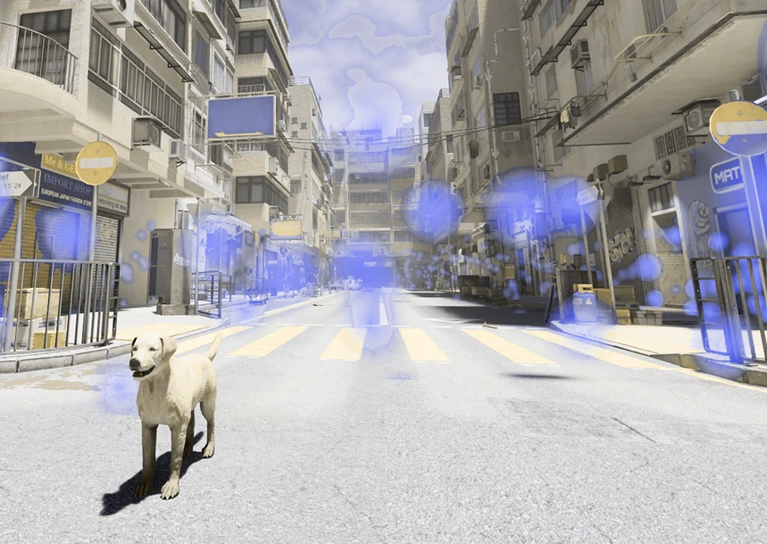
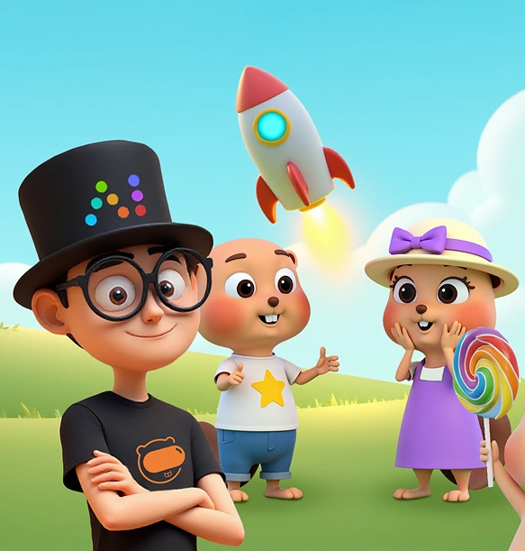

01 · 陪伴
阅读完整案例 →常在
以领养仪式开启的个性化 AI 宠物陪伴系统，将智能体、多模态感知与实体装置连接成持续的情感体验。

我是念一扬，一名关注 AI、具身交互与叙事体验的交互设计实践者。通过研究、原型和技术实现，让抽象的人机关系成为可被感知的体验。
向下探索 ↓从陪伴、共演、共情到共创，四个项目共同回应一个问题：当智能系统进入生活、舞台与创作过程，设计如何重新建立人与技术之间的关系？
每个案例都同时呈现问题洞察、体验机制、技术实现与结果验证。
以领养仪式开启的个性化 AI 宠物陪伴系统，将智能体、多模态感知与实体装置连接成持续的情感体验。
将 AI 的语义偏移、身份切换与情感投射转译为观众可参与的生成式戏剧体验。

把流浪犬的视觉、听觉与生存处境转化为游戏机制，让参与者从观看转向以犬的身份经历城市。

围绕多人 AIGC 绘本生产中的一致性问题，建立角色模型、提示词、生成规则与视觉审核组成的协作系统。

从手绘交互提案到 IP、标志与海报设计，记录我如何通过图像组织信息、推演体验并建立视觉语言
我关注人与智能系统如何建立情感、身份和协作关系。我的实践横跨用户研究、体验设计、AI 智能体、实时交互、创意编程与实体原型。